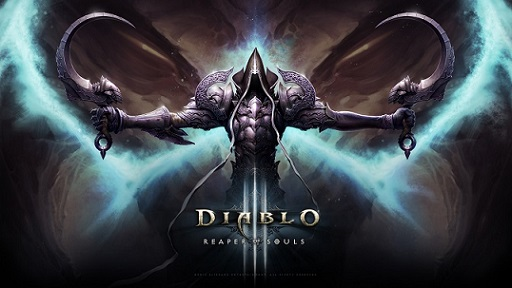
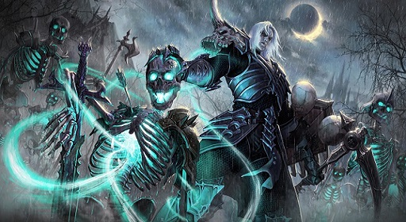

Diablo 3

אני משוחד בכל מה שקשור למשחק הזה, כמו שספרתי מגיל 12 חלמתי עליו ושקבלתי לא הרפתי. משחק מאוד מעניין, עולם פתוח עם מלא מפות ויצורים מוזרים ומפחידים. אפשר לשחק באינטרנט עם אנשים, אפשר לשחק לבד. והוא מאוד נוח לשימוש, שולט בדמות עם העכבר ויש לך כישורים שאתה מפעיל בעזרת המקלדת. לאורך המשחק אתה יכול ללמוד כישורים חדשים ולהחליף את הציוד שאתה לובש, כמובן שזה משנה את איך שאתה נראה. הסיכוי שיהיו שתי דמויות שנראות אותו דבר שמשחקים באינטרנט הוא קלוש.
בסוגית המשחקים האלו, הדמות האהובה עלי היא המזמן, תמיד. אם יש מזמן במשחק אני שמח. בדיאבלו יש מזמן שנקרא necromancer . הוא מזמן את המתים שהרגת במשחק ועוד חיות מוזרות שעוזרות לך להלחם בהדר של היצורים שתוקפים אותך. הוא נראה ממש מגניב וככה גם הזימונים שלו. 
*אזהרה בפסקה הבא יש ספוילרים*
מה שמגניב במשחק הזה הוא שהסיפור ממש מעניין, מרגיש לך שאתה בסרט משחק את השחקן הראשי. אתה מה שנקרא הנפלן, מן מושיעה שאמור להציל את כדור הארץ מהשטן. שאתה מתחיל אתה לא מודע לכך, ופוגש נערה צעירה שאיתה אתה מתחיל את המסע. לאחר מכן אתה מגלה שסבא שלה הוא מתרגם מגילות זקן שיודע על הנבואה. הוא מנסה לשכנע אותך ואתה לא מאמין, אבל אחרי הרבה מלחמות באופל והמוות של הסבא הזקן, אתה מאמין לו סוף סוף אבל כבר מאוחר מידיי ומלך הרוע השתלט על הגוף של הנכדה של מתרגם המגילות ועכשיו אתה צריך להילחם בו ובצבא שלו(הקרב הסופי). כל המשחק מלווה בסרטי אנימציה מרהיבים ומיוחדים, ממליץ לחפש סינמה של המשחק ביוטיוב רק כדי לראות על מה אני מדבר.
לגבי המשחק, מאוד ממליץ לקנות ולשחק. המפתחים לא מפסיקים לשדרג אותו, יש עונות שמתלחפות ובהם ארועים מיוחדים שאפשר להשתתף בהם במשחק. יש אנספור הסברים ביוטיוב איך לשחק ואיפה להתחיל וכמות השחקנים לא מאכזבת.